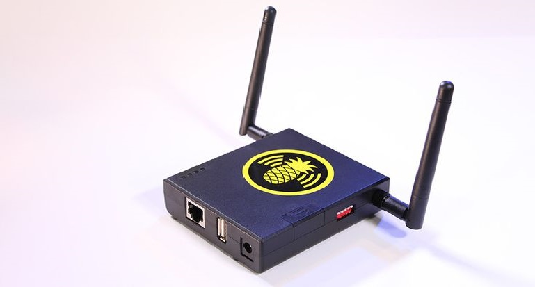
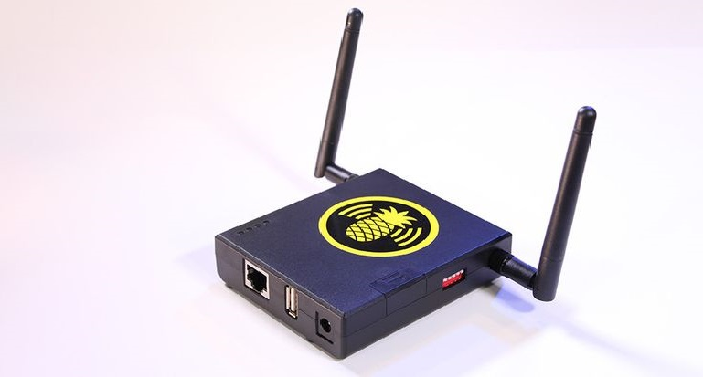

About Me
Hi, my name is Tudor and I live in Bucharest. I am a studying Computer Science at the University of Bucharest. I have also finished National College Ion Creanga Bucharest. I got into computers at a young age because I was playing video games and started to learn programming since high school. I'm also interested in:
- GNU/Linux Endeavours
- Hacking
- Fixing and Modding Hardware (mostly consoles)
- Socializing
 



If you're wondering what I've achieved (mostly nothing) you can take a look at the Projects tab. You can also read my blog and shoot me a message if you want to.